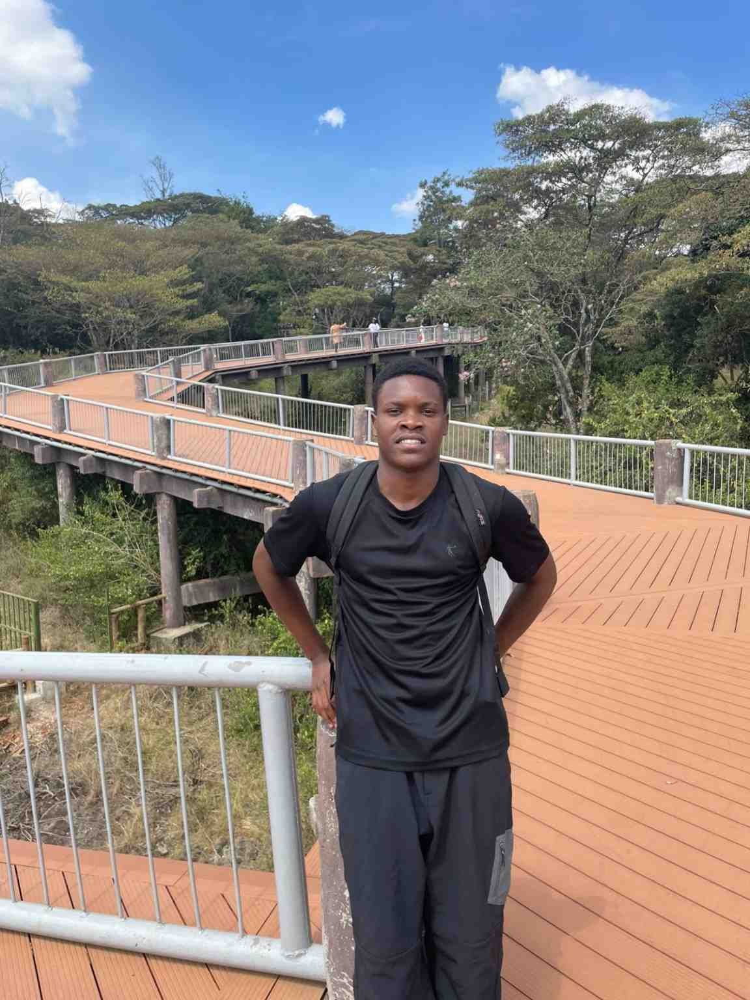

Otieno Erick Ouma | WDD 130

Hello! My name is Otieno Erick Ouma and I am from Kenya. I am currently studying Web and Computer Programming through BYU-Pathway Worldwide.

Hello! My name is Otieno Erick Ouma and I am from Kenya. I am currently studying Web and Computer Programming through BYU-Pathway Worldwide.